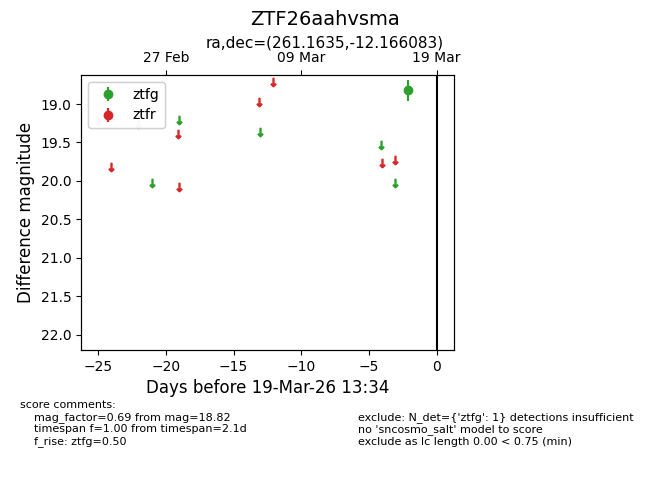
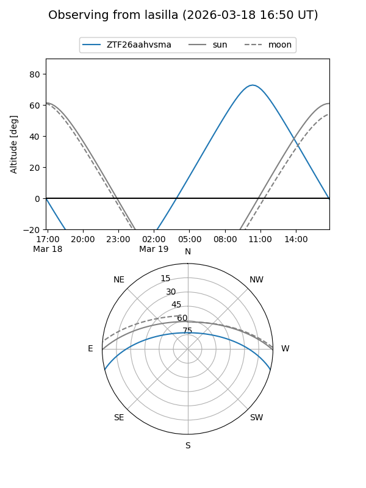
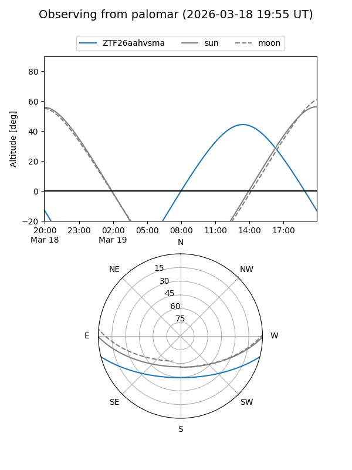

ZTF26aahvsma
Target ZTF26aahvsma at 2026-03-19 13:36
Aliases and brokers:
FINK: link
Lasair: link
ALeRCE: link
alt names
ZTF26aahvsma (ztf,fink_ztf)
Coordinates:
equatorial (ra, dec) = 261.1635,-12.16608
equatorial (HMS+DMS) = 17:24:39.23,-12:09:57.90
galactic (l, b) = (11.7296,+13.03384)
Flags:
Photometry:
last ztfg=18.82
1 ztfg detections
Lightcurve

Visibility


Additional plots